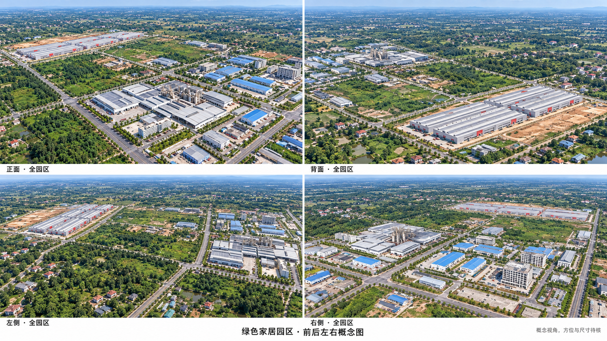
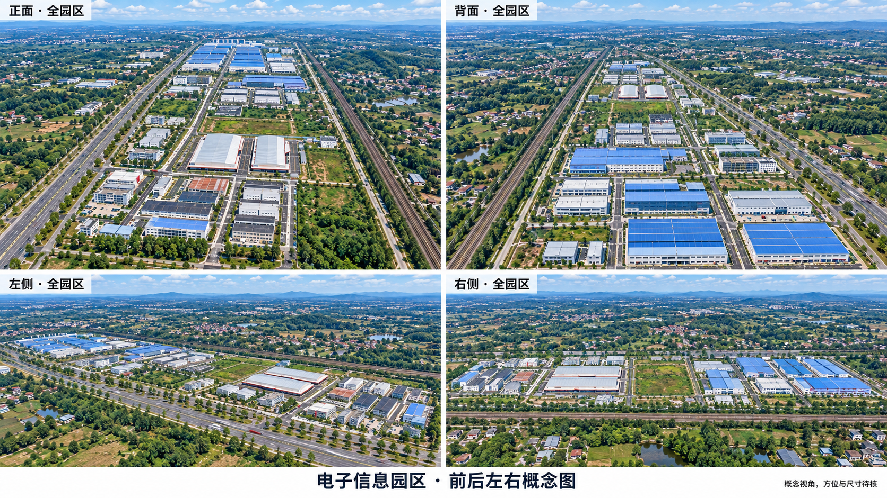

<!doctype html>
<html lang="zh-CN"><meta charset="utf-8"><meta name="viewport" content="width=device-width,initial-scale=1"><title>绿色家居与电子信息 · 前后左右概念图</title>
<style>body{margin:0;background:#f4f2ed;color:#242d28;font-family:system-ui,sans-serif}main{max-width:1680px;margin:auto;padding:28px 24px}h1{font-size:30px}p{line-height:1.7;color:#556158}nav{display:flex;gap:24px;margin:28px 0}a{color:#315d49}section{margin:40px 0 60px}img{display:block;width:100%;height:auto;border-radius:6px;background:white}.note{padding:14px 18px;border-left:3px solid #8a9a79;background:#e7eadf}footer{border-top:1px solid #ccd1c8;padding:22px 0}</style>
<main><h1>绿色家居、电子信息 · 前后左右概念图</h1><p>每区四幅完整园区视角：正面、背面、左侧、右侧。</p><p class="note">以原全景观察方向为正面基准，实际方位、尺寸和背面细节待核。此版用于审阅整体构图。</p>
<nav><a href="#gh">绿色家居</a><a href="#ei">电子信息</a><a href="../v3/index.html">原全景参考</a></nav>
<section id="gh"><h2>01 绿色家居园区</h2><a href="01-green-home-four-views.png"></a></section>
<section id="ei"><h2>02 电子信息园区</h2><a href="02-electronics-four-views.png"></a></section>
<footer><a href="README.md">审阅与参考说明</a> · <a href="prompts.md">生成提示词</a></footer></main></html>
